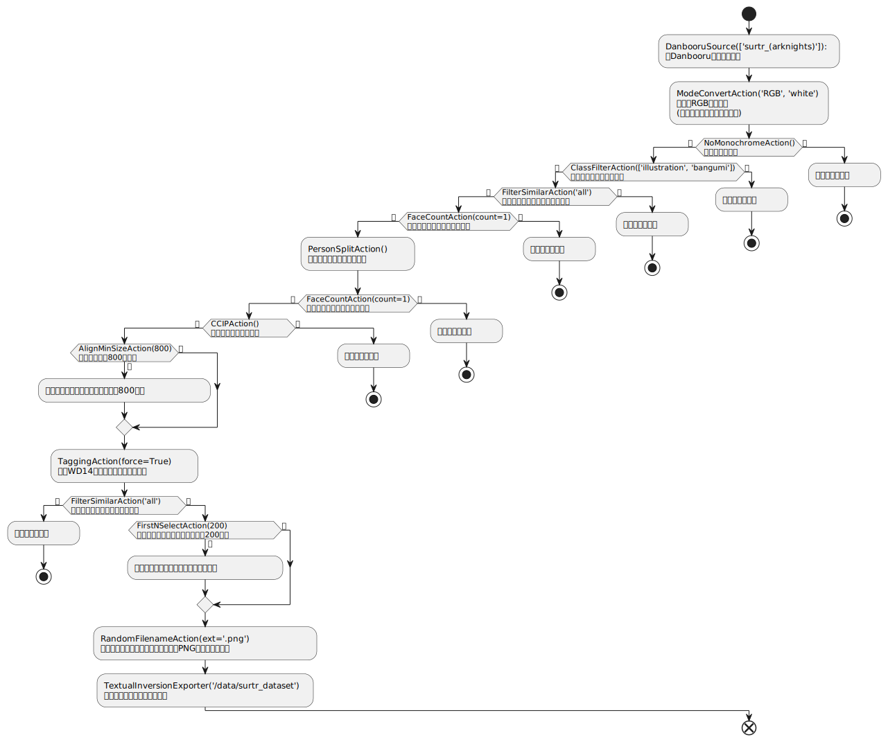

我想给我老婆炼丹
在本教程开始之前，你需要完成如下内容：
首先，安装Python并掌握基本用法
(Python3教程，外部链接详见：
之后，完成waifuc库安装
(本项目安装详见：https://deepghs.github.io/waifuc/main/tutorials-CN/installation/index.html )
我该怎么做？
第一步，找到你一见钟情的老婆，记住她的名字和出处
比如，Narugo的老婆是下面这位红发的恶魔女孩
她叫史尔特尔
Surtr，出处为明日方舟Arknights
在图像站上，找到她对应的人物关键词
例如对于史尔特尔，可以在Danbooru上找到她的关键词
surtr_(arknights)
接着，创建一个名为
crawl.py的Python程序文件，将以下代码粘贴进去并保存：1from waifuc.action import NoMonochromeAction, FilterSimilarAction, \ 2 TaggingAction, PersonSplitAction, FaceCountAction, FirstNSelectAction, \ 3 CCIPAction, ModeConvertAction, ClassFilterAction, RandomFilenameAction, AlignMinSizeAction 4from waifuc.export import TextualInversionExporter 5from waifuc.source import DanbooruSource 6 7if __name__ == '__main__': 8 # 将关键词传入，如：'surtr_(arknights)' 9 # 注意：对于Danbooru，这里若将'solo'与'surtr_(arknights)'关键词一同传入， 10 # 如：['surtr_(arknights)'，'solo']，会使爬取结果更符合预期的单人图像 11 # 但并非必须，因为在接下来的流水线中我们会将包含的多人图像处理为单人图像 12 s = DanbooruSource(['surtr_(arknights)']) 13 14 # 爬取图像，处理它们，然后以给定的格式保存到目录中 15 s.attach( 16 # 以RGB色彩模式加载图像并将透明背景替换为白色背景 17 ModeConvertAction('RGB', 'white'), 18 19 # 图像预过滤 20 NoMonochromeAction(), # 丢弃单色、灰度或素描等单色图像 21 ClassFilterAction(['illustration', 'bangumi']), # 丢弃漫画或3D图像 22 # RatingFilterAction(['safe', 'r15']), # 可选，丢弃非全年龄或R15的图像 23 FilterSimilarAction('all'), # 丢弃相似或重复的图像 24 25 # 人像处理 26 FaceCountAction(count=1), # 丢弃没有人脸或有多个人脸的图像 27 PersonSplitAction(), # 将多人图像中每个人物裁出 28 FaceCountAction(count=1), # 丢弃裁出内容中没有人脸或有多个人脸的图像 29 30 # CCIP，丢弃内容为非指定角色的图像 31 CCIPAction(), 32 33 # 将短边大于800像素的图像等比例调整至短边为800像素 34 AlignMinSizeAction(800), 35 36 # 使用wd14 v2进行标注，如果不需要角色标注，将character_threshold设置为1.01 37 TaggingAction(force=True), 38 39 FilterSimilarAction('all'), # 再次丢弃相似或重复的图像 40 FirstNSelectAction(200), # 当已有200张图像到达此步骤时，停止后继图像处理 41 # MirrorAction(), # 可选，镜像处理图像进行数据增强 42 RandomFilenameAction(ext='.png'), # 随机重命名图像 43 ).export( 44 # 保存到/data/surtr_dataset目录，可自行更改 45 TextualInversionExporter('/data/surtr_dataset') 46 )
执行以下的命令来运行上一步的程序：
python crawl.py等待程序运行完毕，打开为其指定的
./data/surtr_dataset文件夹，你将看到包含200图的史尔特尔数据集，且已经完成了标注，即与图像同名的txt文件
按照以上内容如法炮制，仅需稍作等待，我们便可以轻易地得到任何想要的角色数据集
上文提供的代码是如何运行的？
在上文中，我们使用waifuc搭建了一条图像从爬取到输出的完整流水线。流水线分为三个部分，同时也对应了waifuc的三个主要组件：
数据源组件
Source，加载图像数据加入流水线在本例中使用：
DanbooruSource，从Danbooru图像站爬取图像数据并加入流水线在Danbooru上按照关键词
surtr_(arknights)进行检索并爬取
图像操作组件
Action，对图像进行处理与筛选在本例中使用：
ModeConvertAction，对图像进行格式转换处理本例中转换为RGB色彩格式，并对透明背景的图添加白色背景
NoMonochromeAction，对图像进行单色图过滤过滤掉黑白图、线稿、单色漫画等
ClassFilterAction，对图像进行类型过滤本例中只保留插画
illustration和番剧截图bangumi两种图像 漫画comic和恋活、MMD等3D图像将被过滤FilterSimilarAction，对图像进行相似过滤过滤掉相似度高的图像
FaceCountAction，对图像进行人像数量过滤本例中只保留单一人像的图像，无人像或多人像的图像将被过滤
PersonSplitAction，对图像进行人物拆分处理将图像中的所有人物以单一人物为单位裁出为多个图像
CCIPAction，对图像进行人物相关过滤本例中将过滤掉非surtr角色的图像
AlignMinSizeAction，对图像进行压缩处理本例中将短边长度超过800像素的图像等比例缩放至短边为800像素
TaggingAction，对图像使用wd14v2 tagger进行打标处理本例中由于爬取的图像来自Danbooru，本身包含提示词信息，因此需要将
force设置为True来让打标器重新打标FirstNSelectAction，对图像进行取前N个处理当到达这一步的图像达到设置数量时，终止之前的所有操作
本例中设置数量为200，满足时将停止继续对后续图像的爬取和操作
RandomFilenameAction，对图像进行随机命名处理本例中将图像进行随机重命名，并使用
.png作为图像保存为图像文件时的扩展名
图像导出组件
Exporter，将图像以指定形式导出至目录在本例中使用：
TextualInversionExporter，将图像以图像文件+标注格式导出至目录以图像文件+txt标注文件形式保存处理完毕的图像到指定路径
本例中保存至
./data/surtr_dataset路径
感谢Narugo保留的PlantUML源代码，汉化流程图如下：

Note
对以上内容的补充：
可通过替换
Source中的其他数据源来从其他的网站爬取图像数据Source支持大部分图像站的数据源，包括Pixiv、Sankaku、Rule34、AnimePictures、Zerochan、Konachan、堆糖（duitang）、触站（huashi6）等
可通过
Source中的LocalSource数据源加载本地目录来获取图像数据Source中的LocalSource数据源可用来加载指定的本地目录，以获取图像数据
可通过增减、排序
Action中的操作根据具体需求来构建工作流程waifuc支持调用
Source的attach方法，以增减、排序的模块化方式为图像添加Action中的操作，有相当高的自由度与灵活性
可通过
Exporter中的其他导出来将图像以其他形式导出Exporter提供了数种导出，以适应不同情况的使用需求
好消息！
上面的例子中，需要用户先从图像站上获取需要的关键词，才能进行检索——这简直太“繁琐”了！DeepGHS也觉得，这样太麻烦了，甚至还需要用户进行手动操作！
不过好消息是，DeepGHS团队已经一定程度上解决了这个问题——团队提供了一个额外的、支持多语言输入的、可以直接使用角色名字的数据源
Note
gchar为Source的扩展包，包含了一个预置的角色数据库，对目前主流二游的所有角色支持：中/日/英官方名称检索
神秘网友援助的别名/外号检索
具体支持列表详见：https://narugo1992.github.io/gchar/main/best_practice/supported/index.html#supported-games-and-sites
这个包通过如下命令进行安装：
pip install git+https://github.com/deepghs/waifuc.git@main#egg=waifuc[gchar]
gchar目前已经完全支持明日方舟Arknights的角色数据，史尔特尔的当然也包括在其中
因此，我们只需从Source中导入GcharAutoSource
并将s = DanbooruSource(['surtr_(arknights)'])替换为s = GcharAutoSource('surtr')或s = GcharAutoSource('史尔特尔')即可
当然，上面提到了，角色的外号与别称也是被允许的，不过相较于官方名称来说，覆盖程度会较窄
完整代码如下：
1from waifuc.action import NoMonochromeAction, FilterSimilarAction, \ 2 TaggingAction, PersonSplitAction, FaceCountAction, FirstNSelectAction, \ 3 CCIPAction, ModeConvertAction, ClassFilterAction, RandomFilenameAction, AlignMinSizeAction 4from waifuc.export import TextualInversionExporter 5from waifuc.source import GcharAutoSource 6 7if __name__ == '__main__': 8 # 通过gchar扩展包提供的数据源进行爬取 9 # 史尔特尔、42、surtr都是支持的 10 s = GcharAutoSource('surtr') 11 12 # 爬取图像，处理它们，然后以给定的格式保存到目录中 13 s.attach( 14 # 以RGB色彩模式加载图像并将透明背景替换为白色背景 15 ModeConvertAction('RGB', 'white'), 16 17 # 图像预过滤 18 NoMonochromeAction(), # 丢弃单色、灰度或素描等单色图像 19 ClassFilterAction(['illustration', 'bangumi']), # 丢弃漫画或3D图像 20 # RatingFilterAction(['safe', 'r15']), # 可选，丢弃非全年龄或R15的图像 21 FilterSimilarAction('all'), # 丢弃相似或重复的图像 22 23 # 人像处理 24 FaceCountAction(count=1), # 丢弃没有人脸或有多个人脸的图像 25 PersonSplitAction(), # 将多人图像中每个人物裁出 26 FaceCountAction(count=1), # 丢弃裁出内容中没有人脸或有多个人脸的图像 27 28 # CCIP，丢弃内容为非指定角色的图像 29 CCIPAction(), 30 31 # 将短边大于800像素的图像等比例调整至短边为800像素 32 AlignMinSizeAction(800), 33 34 # 使用wd14 v2进行标注，如果不需要角色标注，将character_threshold设置为1.01 35 TaggingAction(force=True), 36 37 FilterSimilarAction('all'), # 再次丢弃相似或重复的图像 38 FirstNSelectAction(200), # 当已有200张图像到达此步骤时，停止后继图像处理 39 # MirrorAction(), # 可选，镜像处理图像进行数据增强 40 RandomFilenameAction(ext='.png'), # 随机重命名图像 41 ).export( 42 # 保存到/data/surtr_dataset目录，可自行更改 43 TextualInversionExporter('/data/surtr_dataset') 44 )